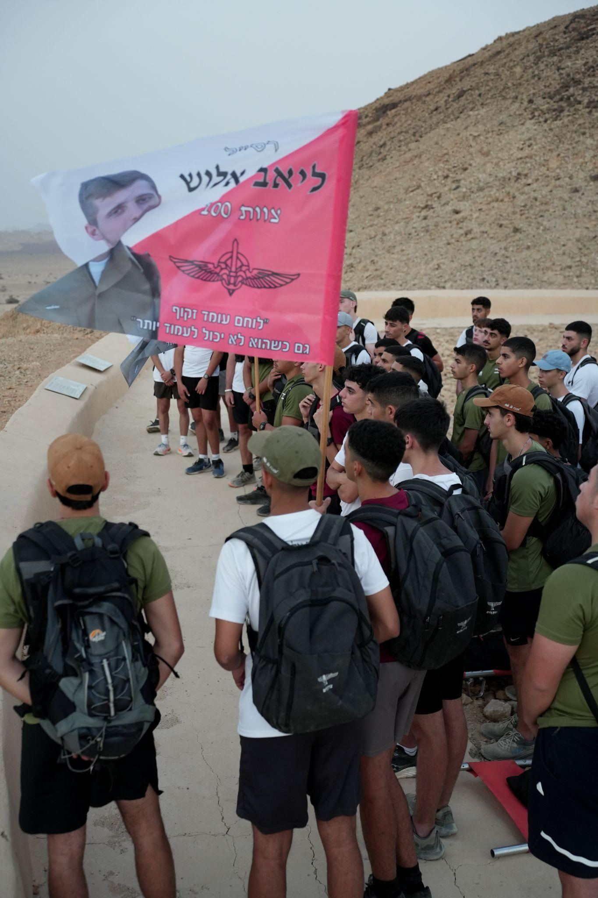

הסיפור של ליאב
רב סמל ליאב אלוש ז״ל
27.12.2001 – 17.12.2023
ליאב נולד בגדרה, בנם הבכור של מלי וקובי ואחיו של עמית. הוא התגייס לחטיבת הקומנדו, ליחידת דובדבן, סיים כמצטיין את קורס הכומתה ואת המסלול, פיקד על מחלקת טירונים ומשם הצטרף לצוות 100. הוא שירת כחובש הצוות וחתם על שנת קבע.
ב־7 באוקטובר נשלח עם הצוות לכפר עזה, שם חילץ אזרחים וטיפל בפצועים תחת אש. ליאב נפל בקרב במרכז חאן יונס, בגיל 22.
״לוחם עומד זקוף גם כשהוא לא יכול לעמוד יותר״מתוך המחברת האישית של ליאב